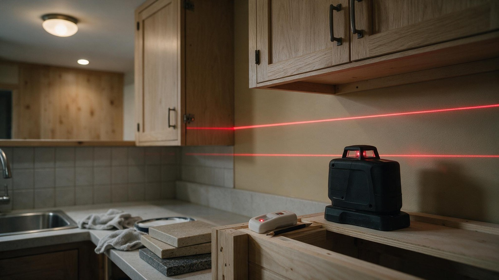
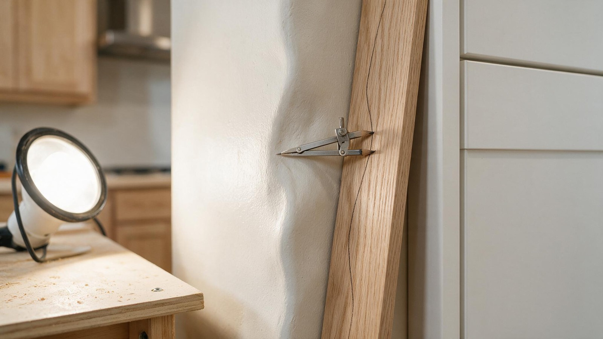
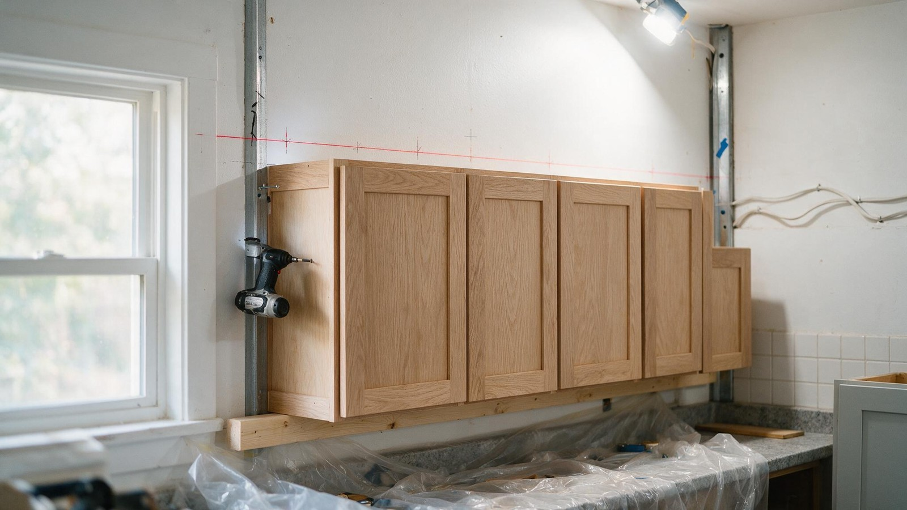

By the Editorial Team | Published: July 2026 | Last Updated: July 2026
The Reason Cabinets Look Built-In
Walk into a well-finished kitchen and the cabinets appear to have grown from the walls - no gaps, no tapering slivers of light behind them, every run straight and every joint tight. That seamless look is not luck, and it is not because the walls are perfect. Walls are never perfect: they bow, lean, and meet at corners that are rarely square. The reason quality cabinets look built-in is two crafts performed on install day - accurate measurement and skilled scribing. These are the least visible and most decisive parts of a cabinet installation, and understanding them explains both why professional installs look flawless and why careless ones show every flaw.

Measuring: Where the Whole Job Begins
Before a single cabinet is ordered, the kitchen is measured - and it is measured far more carefully than most people imagine. A proper measure records the length of every wall, the height of the ceiling, and the exact position of every obstacle and connection: windows, doors, outlets, switches, plumbing stub-outs, vents, and the locations of the studs the cabinets will anchor into. Crucially, walls are measured in multiple places, because a wall is rarely the same length at the floor as at the counter height, and corners are checked for square. This measurement is the foundation of the entire order and layout; an error here propagates into every cabinet that follows.
The measurement also reveals the room's imperfections in advance - how far out of square the corners are, how much the walls bow, how far off level the floor runs. Knowing these before installation lets the layout plan for them, deciding where filler strips will absorb irregularity and how the runs will be positioned so the imperfections end up in the least visible places. Good installers measure to discover problems early, when they are cheap to solve on paper, rather than late, when they are expensive to solve on the wall.
The High Point and the Level Line
On installation day, measurement continues with two references that govern everything: the floor's high point and a level line. Because floors slope, the installer finds the highest point of the floor along the cabinet run and starts the base cabinets from there - every other base cabinet is then shimmed up to match, so the whole run ends level despite the floor. A level line is marked on the wall as the reference for the upper cabinets and the tops of the bases. From that moment, the cabinets follow the line and gravity, not the floor and not the wall, which is precisely why they end up straight in a crooked room.
| Task | What it solves |
|---|---|
| Measure walls in multiple places | Reveals bows and out-of-square corners |
| Locate studs, outlets, plumbing | Anchoring points and cutouts planned |
| Find the floor's high point | Sets where leveling starts |
| Snap a level line | Reference for straight, level runs |
| Scribe fillers and end panels | Closes gaps to crooked walls seamlessly |
Scribing: Fitting Straight Cabinets to Crooked Walls
Scribing is the craft that makes the seams disappear. A cabinet edge, an end panel, or a filler strip is set against the wall, and because the wall isn't straight, a gap of varying width appears. The installer marks the wall's contour onto the piece - often by running a compass or scribing tool along the wall - then trims the piece to that exact contour so it nestles tightly against the wall with no gap. The result is a joint that looks perfect even though the wall behind it is anything but. Fillers between cabinets and walls, panels at the end of a run, and cabinets meeting a wall at a corner all get scribed, and the quality of that scribing is one of the clearest marks of a skilled installer.
Why This Invisible Work Is Worth Understanding
Measurement and scribing are invisible when done right - which is exactly why they are undervalued and, in careless installations, skipped or rushed. A homeowner who understands them knows what they are paying a professional installer to do: not merely to hang boxes, but to reconcile factory-straight cabinets with a hand-built, imperfect room so the result looks intentional and seamless. This craft is a core part of the installation process, and appreciating it helps a homeowner recognize quality work, ask the right questions, and understand why skilled installation is worth its cost. The tapering gaps and crooked runs of a poor job are simply measurement and scribing done badly.

Frequently Asked Questions
Why do installers measure walls in more than one place?
Because walls are rarely the same length top to bottom and corners are rarely square. Measuring in multiple places reveals bows and out-of-square conditions, so the layout can plan for them rather than discovering them mid-install when they are costly to fix.
What is scribing on a cabinet?
Scribing is trimming a cabinet edge, end panel, or filler strip to match the exact contour of an uneven wall, so it fits tightly with no gap. Since walls aren't straight, scribing is what makes the joint between cabinet and wall look seamless.
What is the floor's high point and why does it matter?
It's the highest spot along the cabinet run on a sloping floor. Installers start the base cabinets there and shim every other cabinet up to match, so the whole run finishes level despite the floor's slope. Starting anywhere else would leave the run out of level.
Why don't cabinets just follow the wall and floor?
Because walls bow and floors slope, so following them would produce crooked, out-of-level runs and gaps. Installers reference a level line and the floor's high point instead, setting the cabinets to gravity so they end up straight in an imperfect room.

What are filler strips for?
Filler strips close the gaps between standard-size cabinets and walls or between cabinets and appliances. They are scribed to the wall's contour so the gap disappears, which is how standard cabinets fit neatly into rooms that are never standard dimensions.
How can I tell if scribing was done well?
Look where cabinets meet walls and at the ends of runs: the joints should be tight with no tapering slivers of gap, and fillers should sit flush against the wall. Visible gaps that widen along their length are the sign of scribing skipped or done poorly.
Why is measurement so important to the whole job?
Because it's the foundation everything else rests on - the cabinet order, the layout, the cutouts, and the anchoring all depend on accurate measurements. An error at the measuring stage propagates into every cabinet, which is why careful measurement is where a quality installation truly begins.